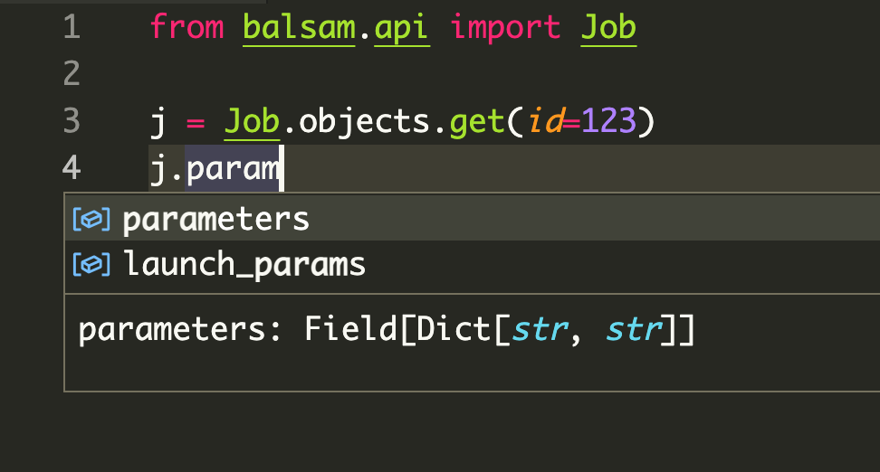

The Python API¶
The documentation alludes to the Balsam Python API in several places. For
instance, the Managing Jobs section gives real-world examples of API usage in
creating, querying, and updating Jobs. In this
section, we take a step back and look more generally at the structure and
semantics of Balsam's Python API. This is useful because all the Python API
resources (Job, BatchJob, EventLog) share the same methods and
data structures for creating, querying, updating, and deleting resources.
The first thing to understand is that the Python API is merely a convenience
layer built on top of a standard HTTP
requests client. One could bypass
balsam.api altogether and interact with the Balsam REST API using another
programming language or a command-line tool like curl.
Resources are imported at the top-level from balsam.api:
from balsam.api import (
Site,
ApplicationDefinition,
Job,
BatchJob,
TransferItem,
EventLog,
)
The following sections use Job as an example but easily
generalize to any of the resources imported above.
For example, querying your Sites looks just like querying your Jobs:
from datetime import datetime, timedelta
hour_ago = datetime.utcnow() - timedelta(hours=1)
recently_used_sites = Site.objects.filter(last_refresh_after=hour_ago)
recently_updated_jobs = Job.objects.filter(last_update_after=hour_ago)
Once again, the docstrings and type annotations visible in a Python IDE are hugely helpful in discovering the allowed parameters for various resources. Best of all, because the Python API is dynamically generated from the REST API schema, the Python docstrings and type hints stay up to date, even if this user guide lags behind!
Model Fields¶
Each of the API resources has a model class (like Job) which
defines a set of Fields that can be exchanged with the REST API.
The model fields are type-annotated and can be explored from your IDE or class docstrings. For example, we can start searching for "param" and find that job.parameters should be a dictionary of strings:

Relationship to Django ORM
Previous versions of Balsam used the real Django ORM to communicate with a private user database. This proved to be an effective programming model, and so the new Balsam Python API was written to preserve a subset of the structure and syntax of the former API.
If you peek below the surface, the current Balsam Python API is completely different from an ORM. Whereas ORMs lazily execute SQL queries over a database connection, the Balsam API executes HTTPS requests over an Internet connection. It wraps one specific REST API schema and is therefore vastly narrower in scope and capabilities.
Creating¶
Each resource has three methods of construction. First, you can create several in-memory instances, and later persist them to the backend:
# Create in-memory with the required kwargs...
j = Job(...)
# New in-memory resources have no ID:
assert j.id is None
# ...then persist:
j.save()
assert j.id is not None
Second, you can create and persist in a single step:
j = Job.objects.create(...)
assert j.id is not None
Third, you can bulk-create from a collection of in-memory resources. This is far more efficient for creating large numbers of jobs with fewer API round trips:
jobs = [Job(**kwargs) for kwargs in job_specs]
# Capture the return value to get created IDs!
jobs = Job.objects.bulk_create(jobs)
for job in jobs:
assert job.id is not None
bulk_create does not modify objects in place!
When passing a list of items into bulk_create(), you must use the returned value to overwrite the input list with the newly-created items. This is necessary to set the ID on each item as generated by the server. Otherwise, the created items will have id == None and generally behave like objects that have never been saved to the API.
Updating¶
If we change some fields on an existing instance, we can update it by calling
save(). The Python API is aware that if the resource id is set, you mean to
update an existing resource rather than create a new one.
job.state = "RESTART_READY"
job.save()
If want to load recent changes to an in-memory resource:
# Re-fetch the Job & update fields:
job.refresh_from_db()
We can apply the same change to every item matching a particular Query:
# Select all FAILED jobs, change num_nodes=1, and mark for retry
Job.objects.filter(state="FAILED").update(num_nodes=1, state="RESTART_READY")
If we need to perform a large list of different updates, we can pass a list of mutated instances:
# Mutated jobs to be updated, each in their own way:
Job.objects.bulk_update(modified_jobs)
Deleting¶
We can delete individual resources:
job.delete()
assert job.id is None
Or we can bulk-delete querysets:
Job.objects.filter(state="FAILED").delete()
Querying¶
Each class has a manager (for instance Job.objects is a JobManager) which generates Query objects.
All¶
We can start with a query returning all items with all()
for job in Job.objects.all():
print(job)
Filter¶
We can chain queries one-after-another by providing additional sets of filter parameters:
# These 3 chained queries...
all_jobs = Job.objects.all()
foo_jobs = all_jobs.filter(tags={"experiment": "foo"})
failed_foo_jobs = foo_jobs.filter(state="FAILED")
# ...are equivalent to this 1 query:
failed_foo_jobs = Job.objects.filter(
tags={"experiment": "foo"},
state="FAILED"
)
Order By and Slicing¶
When there are hundreds of thousands of Jobs matching your query, it makes sense to order on some criterion and take chunks with the slicing operator:
# 1000 most recent failures
Job.objects.filter(state="FAILED").order_by("-last_update")[0:1000]
Under the hood, the [0:1000] slice operation adds limit and offset to the HTTP query parameters, generating an efficient request that does not fetch more data than you asked for!
Get¶
If our query should return exactly one object, we can use get() instead of
filter() to return the object directly. This method raises a model-scoped
DoesNotExist error if the query returned 0 items, or MultipleObjectsReturned
if more than 1 item was found. We can catch these errors that arise when when
exactly one unique object is expected:
try:
h2o_job = Job.objects.get(tags={"system": "H2O"})
except Job.DoesNotExist:
print("There is no finished H2O job!")
except Job.MultipleObjectsReturned:
print("There is more than one finished H2O job!")
Count¶
We can use count() to fetch the number of items matching a query, without actually fetching the list of items. This can be useful to quickly tally up large numbers of Jobs:
for state in ["RUNNING", "JOB_FINISHED"]:
count = Job.objects.filter(state=state).count()
print(state, count)
First¶
To grab the first item from a query we can use either syntax:
one = Job.objects.filter(state="RUNNING")[0]
same_thing = Job.objects.filter(state="RUNNING").first()
Lazy Query Evaluation¶
We can build queries with filter, chain them together, add order_by clauses, apply [start:end] slices, and store these queries in Python variables. None of these actions fetches data because queries are lazily evaluated.
# This doesn't fetch any Jobs yet:
failed_jobs = Job.objects.filter(state="FAILED")
When a query is evaluated by iteration or some other method, its result is cached, so that repeated iterations over the same query variable do not trigger redundant requests.
# This triggers the HTTP request:
for job in failed_jobs:
print(job)
# This re-uses the cached result:
for job in failed_jobs:
print("Again!", job)
# We can explicitly force iteration and store the result:
running_jobs = list(Job.objects.filter(state="RUNNING"))
Length¶
Evaluating the len(query) forces fetching the result set and returns its
length. If you only want the count without fetching the items, its more
efficient to use the count() method mentioned above.
Boolean Value¶
Evaluating the query as a Boolean expression (e.g. in an if statement like if
query:) also triggers evaluation, and the query evaluates to True if there is
at least one object in the result set; it's False otherwise.